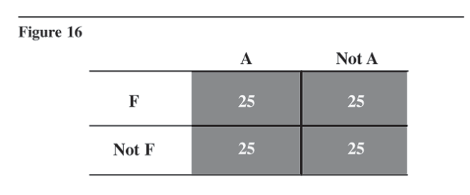

Chapter 11 Biases in Perception of Cause and Effect
Judgments about cause and effect are necessary to explain the past, understand the present, and estimate the future. These judgments are often biased by factors over which people exercise little conscious control, and this can influence many types of judgments made by intelligence analysts. Because of a need to impose order on our environment, we seek and often believe we find causes for what are actually accidental or random phenomena. People overestimate the extent to which other countries are pursuing a coherent, coordinated, rational plan, and thus also overestimate their own ability to predict future events in those nations. People also tend to assume that causes are similar to their effects, in the sense that important or large effects must have large causes.
When inferring the causes of behavior, too much weight is accorded to personal qualities and dispositions of the actor and not enough to situational determinants of the actor’s behavior. People also overestimate their own importance as both a cause and a target of the behavior of others. Finally, people often perceive relationships that do not in fact exist, because they do not have an intuitive understanding of the kinds and amount of information needed to prove a relationship.
* * * * * * * * * * * * * * * * * * *
We cannot see cause and effect in the same sense that we see a desk or a tree. Even when we observe one billiard ball striking another and then watch the previously stationary ball begin to move, we are not perceiving cause and effect. The conclusion that one ball caused the other to move results only from a complex process of inference, not from direct sensory perception. That inference is based on the juxtaposition of events in time and space plus some theory or logical explanation as to why this happens.
There are several modes of analysis by which one might infer cause and effect. In more formal analysis, inferences are made through procedures that collectively comprise the scientific method. The scientist advances a hypothesis, then tests this hypothesis by the collection and statistical analysis of data on many instances of the phenomenon in question. Even then, causality cannot be proved beyond all possible doubt.
The scientist seeks to disprove a hypothesis, not to confirm it. A hypothesis is accepted only when it cannot be rejected.
Collection of data on many comparable cases to test hypotheses about cause and effect is not feasible for most questions of interest to the Intelligence Community, especially questions of broad political or strategic import relating to another country’s intentions. To be sure, it is feasible more often than it is done, and increased use of scientific procedures in political, economic, and strategic research is much to be encouraged. But the fact remains that the dominant approach to intelligence analysis is necessarily quite different. It is the approach of the historian rather than the scientist, and this approach presents obstacles to accurate inferences about causality.
The procedures and criteria most historians use to attribute causality are less well defined than the scientist’s.
The historian’s aim [is] to make a coherent whole out of the events he studies. His way of doing that, I suggest, is to look for certain dominant concepts or leading ideas by which to illuminate his facts, to trace the connections between those ideas themselves, and then to show how the detailed facts became intelligible in the light of them by constructing a “significant” narrative of the events of the period in question.105
The key ideas here are coherence and narrative. These are the principles that guide the organization of observations into meaningful structures and patterns. The historian commonly observes only a single case, not a pattern of covariation (when two things are related so that change in one is associated with change in the other) in many comparable cases. Moreover, the historian observes simultaneous changes in so many variables that the principle of covariation generally is not helpful in sorting out the complex relationships among them. The narrative story, on the other hand, offers a means of organizing the rich complexity of the historian’s observations. The historian uses imagination to construct a coherent story out of fragments of data.
The intelligence analyst employing the historical mode of analysis is essentially a storyteller. He or she constructs a plot from the previous events, and this plot then dictates the possible endings of the incomplete story. The plot is formed of the “dominant concepts or leading ideas” that the analyst uses to postulate patterns of relationships among the available data. The analyst is not, of course, preparing a work of fiction. There are constraints on the analyst’s imagination, but imagination is nonetheless involved because there is an almost unlimited variety of ways in which the available data might be organized to tell a meaningful story. The constraints are the available evidence and the principle of coherence. The story must form a logical and coherent whole and be internally consistent as well as consistent with the available evidence.
Recognizing that the historical or narrative mode of analysis involves telling a coherent story helps explain the many disagreements among analysts, inasmuch as coherence is a subjective concept. It assumes some prior beliefs or mental model about what goes with what. More relevant to this discussion, the use of coherence rather than scientific observation as the criterion for judging truth leads to biases that presumably influence all analysts to some degree. Judgments of coherence may be influenced by many extraneous factors, and if analysts tend to favor certain types of explanations as more coherent than others, they will be biased in favor of those explanations.
Bias in Favor of Causal Explanations
One bias attributable to the search for coherence is a tendency to favor causal explanations. Coherence implies order, so people naturally arrange observations into regular patterns and relationships. If no pattern is apparent, our first thought is that we lack understanding, not that we are dealing with random phenomena that have no purpose or reason. As a last resort, many people attribute happenings that they cannot understand to God’s will or to fate, which is somehow preordained; they resist the thought that outcomes may be determined by forces that interact in random, unpredictable ways. People generally do not accept the notion of chance or randomness. Even dice players behave as though they exert some control over the outcome of a throw of dice.106 The prevalence of the word “because” in everyday language reflects the human tendency to seek to identify causes.
People expect patterned events to look patterned, and random events to look random, but this is not the case. Random events often look patterned. The random process of flipping a coin six times may result in six consecutive heads. Of the 32 possible sequences resulting from six coin flips, few actually look “random.”107 This is because randomness is a property of the process that generates the data that are produced. Randomness may in some cases be demonstrated by scientific (statistical) analysis. However, events will almost never be perceived intuitively as being random; one can find an apparent pattern in almost any set of data or create a coherent narrative from any set of events.
Because of a need to impose order on their environment, people seek and often believe they find causes for what are actually random phenomena. During World War II, Londoners advanced a variety of causal explanations for the pattern of German bombing. Such explanations frequently guided their decisions about where to live and when to take refuge in air raid shelters. Postwar examination, however, determined that the clustering of bomb hits was close to a random distribution.108
The Germans presumably intended a purposeful pattern, but purposes changed over time and they were not always achieved, so the net result was an almost random pattern of bomb hits. Londoners focused their attention on the few clusters of hits that supported their hypotheses concerning German intentions—not on the many cases that did not.
Some research in paleobiology seems to illustrate the same tendency. A group of paleobiologists has developed a computer program to simulate evolutionary changes in animal species over time. But the transitions from one time period to the next are not determined by natural selection or any other regular process: they are determined by computer-generated random numbers. The patterns produced by this program are similar to the patterns in nature that paleobiologists have been trying to understand. Hypothetical evolutionary events that seem, intuitively, to have a strong pattern were, in fact, generated by random processes.109
Yet another example of imposing causal explanations on random events is taken from a study dealing with the research practices of psychologists. When experimental results deviated from expectations, these scientists rarely attributed the deviation to variance in the sample. They were always able to come up with a more persuasive causal explanation for the discrepancy.110
B. F. Skinner even noted a similar phenomenon in the course of experiments with the behavioral conditioning of pigeons. The normal pattern of these experiments was that the pigeons were given positive reinforcement, in the form of food, whenever they pecked on the proper lever at the proper time. To obtain the food regularly, they had to learn to peck in a certain sequence. Skinner demonstrated that the pigeons “learned” and followed a pattern (which Skinner termed a superstition) even when the food was actually dispensed randomly.111
These examples suggest that in military and foreign affairs, where the patterns are at best difficult to fathom, there may be many events for which there are no valid causal explanations. This certainly affects the predictability of events and suggests limitations on what might logically be expected of intelligence analysts.
Bias Favoring Perception of Centralized Direction
Very similar to the bias toward causal explanations is a tendency to see the actions of other governments (or groups of any type) as the intentional result of centralized direction and planning. “. . .most people are slow to perceive accidents, unintended consequences, coincidences, and small causes leading to large effects. Instead, coordinated actions, plans and conspiracies are seen.”112 Analysts overestimate the extent to which other countries are pursuing coherent, rational, goal-maximizing policies, because this makes for more coherent, logical, rational explanations. This bias also leads analysts and policymakers alike to overestimate the predictability of future events in other countries.
Analysts know that outcomes are often caused by accident, blunder, coincidence, the unintended consequence of well-intentioned policy, improperly executed orders, bargaining among semi-independent bureaucratic entities, or following standard operating procedures under inappropriate circumstances.113 But a focus on such causes implies a disorderly world in which outcomes are determined more by chance than purpose. It is especially difficult to incorporate these random and usually unpredictable elements into a coherent narrative, because evidence is seldom available to document them on a timely basis. It is only in historical perspective, after memoirs are written and government documents released, that the full story becomes available.
This bias has important consequences. Assuming that a foreign government’s actions result from a logical and centrally directed plan leads an analyst to:
Similarity of Cause and Effect
When systematic analysis of covariation is not feasible and several alternative causal explanations seem possible, one rule of thumb people use to make judgments of cause and effect is to consider the similarity between attributes of the cause and attributes of the effect. Properties of the cause are “. . .inferred on the basis of being correspondent with or similar to properties of the effect.”114 Heavy things make heavy noises; dainty things move daintily; large animals leave large tracks. When dealing with physical properties, such inferences are generally correct.
People tend, however, to reason in the same way under circumstances when this inference is not valid. Thus, analysts tend to assume that economic events have primarily economic causes, that big events have important consequences, and that little events cannot affect the course of history. Such correspondence between cause and effect makes a more logical and persuasive—a more coherent—narrative, but there is little basis for expecting such inferences to correspond to historical fact.
Fischer labels the assumption that a cause must somehow resemble its effect the “fallacy of identity,”115 and he cites as an example the historiography of the Spanish Armada. Over a period of several centuries, historians have written of the important consequences of the English defeat of the Spanish Armada in 1588. After refuting each of these arguments, Fischer notes:
In short, it appears that the defeat of the Armada, mighty and melodramatic as it was, may have been remarkably barren of result. Its defeat may have caused very little, except the disruption of the Spanish strategy that sent it on its way. That judgment is sure to violate the patriotic instincts of every Englishman and the aesthetic sensibilities of us all. A big event must have big results, we think.116
The tendency to reason according to similarity of cause and effect is frequently found in conjunction with the previously noted bias toward inferring centralized direction. Together, they explain the persuasiveness of conspiracy theories. Such theories are invoked to explain large effects for which there do not otherwise appear to be correspondingly large causes. For example, it seems “. . .outrageous that a single, pathetic, weak figure like Lee Harvey Oswald should alter world history.”117 Because the purported motive for the assassination of John Kennedy is so dissimilar from the effect it is alleged to explain, in the minds of many it fails to meet the criterion of a coherent narrative explanation. If such “little” causes as mistakes, accidents, or the aberrant behavior of a single individual have big effects, then the implication follows that major events happen for reasons that are senseless and random rather than by purposeful direction.
Intelligence analysts are more exposed than most people to hard evidence of real plots, coups, and conspiracies in the international arena. Despite this—or perhaps because of it—most intelligence analysts are not especially prone to what are generally regarded as conspiracy theories. Although analysts may not exhibit this bias in such extreme form, the bias presumably does influence analytical judgments in myriad little ways. In examining causal relationships, analysts generally construct causal explanations that are somehow commensurate with the magnitude of their effects and that attribute events to human purposes or predictable forces rather than to human weakness, confusion, or unintended consequences.
Internal vs. External Causes of Behavior
Much research into how people assess the causes of behavior employs a basic dichotomy between internal determinants and external determinants of human actions. Internal causes of behavior include a person’s attitudes, beliefs, and personality. External causes include incentives and constraints, role requirements, social pressures, or other forces over which the individual has little control. The research examines the circumstances under which people attribute behavior either to stable dispositions of the actor or to characteristics of the situation to which the actor responds.
Differences in judgments about what causes another person’s or government’s behavior affect how people respond to that behavior. How people respond to friendly or unfriendly actions by others may be quite different if they attribute the behavior to the nature of the person or government than if they see the behavior as resulting from situational constraints over which the person or government has little control.
A fundamental error made in judging the causes of behavior is to overestimate the role of internal factors and underestimate the role of external factors. When observing another’s behavior, people are too inclined to infer that the behavior was caused by broad personal qualities or dispositions of the other person and to expect that these same inherent qualities will determine the actor’s behavior under other circumstances. Not enough weight is assigned to external circumstances that may have influenced the other person’s choice of behavior. This pervasive tendency has been demonstrated in many experiments under quite diverse circumstances118 and has often been observed in diplomatic and military interactions.119
Susceptibility to this biased attribution of causality depends upon whether people are examining their own behavior or observing that of others. It is the behavior of others that people tend to attribute to the nature of the actor, whereas they see their own behavior as conditioned almost entirely by the situation in which they find themselves. This difference is explained largely by differences in information available to actors and observers. People know a lot more about themselves.
The actor has a detailed awareness of the history of his or her own actions under similar circumstances. In assessing the causes of our own behavior, we are likely to consider our previous behavior and focus on how it has been influenced by different situations. Thus situational variables become the basis for explaining our own behavior. This contrasts with the observer, who typically lacks this detailed knowledge of the other person’s past behavior. The observer is inclined to focus on how the other person’s behavior compares with the behavior of others under similar circumstances.120 This difference in the type and amount of information available to actors and observers applies to governments as well as people.
An actor’s personal involvement with the actions being observed enhances the likelihood of bias. “Where the observer is also an actor, he is likely to exaggerate the uniqueness and emphasize the dispositional origins of the responses of others to his own actions.”121 This is because the observer assumes his or her own actions are unprovocative, clearly understood by other actors, and well designed to elicit a desired response. Indeed, an observer interacting with another actor sees himself as determining the situation to which the other actor responds. When the actor does not respond as expected, the logical inference is that the response was caused by the nature of the actor rather than by the nature of the situation.
Intelligence analysts are familiar with the problem of weighing internal versus external causes of behavior in a number of contexts. When a new leader assumes control of a foreign government, analysts assess the likely impact of changed leadership on government policy. For example, will the former Defense Minister who becomes Prime Minister continue to push for increases in the defense budget? Analysts weigh the known predispositions of the new Prime Minister, based on performance in previous positions, against the requirements of the situation that constrain the available options. If relatively complete information is available on the situational constraints, analysts may make an accurate judgment on such questions. Lacking such information, they tend to err on the side of assuming that the individual’s personal predispositions will prompt continuation of past behavior.
Consider the Soviet invasion of Afghanistan. The Soviets’ perception of their own behavior was undoubtedly very different from the American perception. Causal attribution theory suggests that Soviet leaders would see the invasion as a reaction to the imperatives of the situation in South Asia at that time, such as the threat of Islamic nationalism spreading from Iran and Afghanistan into the Soviet Union. Further, they would perceive US failure to understand their “legitimate” national interests as caused by fundamental US hostility.122 Conversely, observers of the Soviet invasion would be inclined to attribute it to the aggressive and expansionist nature of the Soviet regime. Dislike of the Soviet Union and lack of information on the situational constraints as perceived by the Soviets themselves would be likely to exacerbate the attributional bias.123 Further, to the extent that this bias stemmed from insufficient knowledge of situational pressures and constraints, one might expect policymakers who were not Soviet experts to have had a stronger bias than analysts specializing in the Soviet Union. With their greater base of information on the situational variables, the specialists may be better able to take these variables into account.
Specialists on occasion become so deeply immersed in the affairs of the country they are analyzing that they begin to assume the perspective—and the biases—of that country’s leaders. During the Cold War, there was a persistent difference between CIA specialists in Soviet affairs and specialists in Chinese affairs when dealing with Sino-Soviet relations. During border clashes in 1969, for example, specialists on the USSR argued that the Chinese were being “provocative.” These specialists tended to accept the Soviet regime’s versions as to the history and alignment of the border. Specialists in Chinese affairs tended to take the opposite view—that is, that the arrogant Russians were behaving like Russians often do, while the Chinese were simply reacting to the Soviet highhandedness.124 In other words, the analysts assumed the same biased perspective as the leaders of the country about which they were most knowledgeable. An objective account of causal relationships might have been somewhere between these two positions.
The Egypt-Israel peace negotiations in 1978–1979 offered another example of apparent bias in causal attribution. In the words of one observer at the time:
Egyptians attribute their willingness to sign a treaty with Israel as due to their inherent disposition for peace; Israelis explain Egyptian willingness to make peace as resulting from a deteriorating economy and a growing awareness of Israel’s military superiority. On the other hand, Israelis attribute their own orientation for accommodation as being due to their ever-present preference for peace. Egypt, however, explains Israel’s compromises regarding, for example, Sinai, as resulting from external pressures such as positive inducements and threats of negative sanctions by the United States. In addition, some Egyptians attribute Israel’s undesirable behavior, such as establishment of Jewish settlements on the West Bank of the Jordan River, as stemming from Zionist expansionism. If Israel should not place settlements in that territory, Egyptians might account for such desirable behavior as being due to external constraints, such as Western condemnation of settlements. Israelis, on the other hand explain undesirable behavior, such as Egypt’s past tendency to issue threats to drive them into the sea, as resulting from Egypt’s inherent opposition to a Jewish state in the Middle East. When Egyptians ceased to make such threats, Israelis attributed this desirable behavior as emanating from external circumstances, such as Israel’s relative military superiority.125
The persistent tendency to attribute cause and effect in this manner is not simply the consequence of self-interest or propaganda by the opposing sides. Rather, it is the readily understandable and predictable result of how people normally attribute causality under many different circumstances.
As a general rule, biased attribution of causality helps sow the seeds of mistrust and misunderstanding between people and between governments. We tend to have quite different perceptions of the causes of each other’s behavior.
Overestimating Our Own Importance
Individuals and governments tend to overestimate the extent to which they successfully influence the behavior of others.126 This is an exception to the previously noted generalization that observers attribute the behavior of others to the nature of the actor. It occurs largely because a person is so familiar with his or her own efforts to influence another, but much less well informed about other factors that may have influenced the other’s decision.
In estimating the influence of US policy on the actions of another government, analysts more often than not will be knowledgeable of US actions and what they are intended to achieve, but in many instances they will be less well informed concerning the internal processes, political pressures, policy conflicts, and other influences on the decision of the target government.
This bias may have played a role in the recent US failure to anticipate Indian nuclear weapons testing even though the new Indian Government was elected partly on promises it would add nuclear weapons to India’s military arsenal. Most US intelligence analysts apparently discounted the promises as campaign rhetoric, believing that India would be dissuaded from joining the nuclear club by economic sanctions and diplomatic pressure. Analysts overestimated the ability of US policy to influence Indian decisions.
When another country’s actions are consistent with US desires, the most obvious explanation, in the absence of strong evidence to the contrary, is that US policy effectively influenced the decision.127 Conversely, when another country behaves in an undesired manner, this is normally attributed to factors beyond US control. People and governments seldom consider the possibility that their own actions have had unintended consequences. They assume that their intentions have been correctly perceived and that actions will have the desired effect unless frustrated by external causes.
Many surveys and laboratory experiments have shown that people generally perceive their own actions as the cause of their successes but not of their failures. When children or students or workers perform well, their parents, teachers, or supervisors take at least part of the credit; when they do poorly, their mentors seldom assume any blame. Successful candidates for Congress generally believe their own behavior contributed strongly to their victory, while unsuccessful candidates blame defeat on factors beyond their control.
Another example is the chest thumping that some Americans engaged in after the fall of the Soviet Union. According to some, the demise of the USSR was caused by strong US policies, such as increased defense expenditures and the Strategic Defense Initiative, which caused Soviet leaders to realize they could no longer compete with the United States. The US news media played this story for several weeks, interviewing many people—some experts, some not—on why the Soviet Union collapsed. Most serious students understood that there were many reasons for the Soviet collapse, the most important of which were internal problems caused by the nature of the Soviet system.
People and governments also tend to overestimate their own importance as the target of others’ actions. They are sensitive to the impact that others’ actions have on them, and they generally assume that people and governments intend to do what they do and intend it to have the effect that it has. They are much less aware of, and consequently tend to downgrade the importance of, other causes or results of the action.
In analyzing the reasons why others act the way they do, it is common to ask, “What goals are the person or government pursuing?” But goals are generally inferred from the effects of behavior, and the effects that are best known and often seem most important are the effects upon ourselves. Thus actions that hurt us are commonly interpreted as intentional expressions of hostility directed at ourselves. Of course, this will often be an accurate interpretation, but people sometimes fail to recognize that actions that seem directed at them are actually the unintended consequence of decisions made for other reasons.
Illusory Correlation
At the start of this chapter, covariation was cited as one basis for inferring causality. It was noted that covariation may either be observed intuitively or measured statistically. This section examines the extent to which the intuitive perception of covariation deviates from the statistical measurement of covariation.
Statistical measurement of covariation is known as correlation. Two events are correlated when the existence of one event implies the existence of the other. Variables are correlated when a change in one variable implies a similar degree of change in another. Correlation alone does not necessarily imply causation. For example, two events might co-occur because they have a common cause, rather than because one causes the other. But when two events or changes do co-occur, and the time sequence is such that one always follows the other, people often infer that the first caused the second. Thus, inaccurate perception of correlation leads to inaccurate perception of cause and effect.
Judgments about correlation are fundamental to all intelligence analysis. For example, assumptions that worsening economic conditions lead to increased political support for an opposition party, that domestic problems may lead to foreign adventurism, that military government leads to unraveling of democratic institutions, or that negotiations are more successful when conducted from a position of strength are all based on intuitive judgments of correlation between these variables. In many cases these assumptions are correct, but they are seldom tested by systematic observation and statistical analysis.
Much intelligence analysis is based on common-sense assumptions about how people and governments normally behave. The problem is that people possess a great facility for invoking contradictory “laws” of behavior to explain, predict, or justify different actions occurring under similar circumstances. “Haste makes waste” and “He who hesitates is lost” are examples of inconsistent explanations and admonitions. They make great sense when used alone and leave us looking foolish when presented together. “Appeasement invites aggression” and “agreement is based upon compromise” are similarly contradictory expressions.
When confronted with such apparent contradictions, the natural defense is that “it all depends on. . . .” Recognizing the need for such qualifying statements is one of the differences between subconscious information processing and systematic, self-conscious analysis. Knowledgeable analysis might be identified by the ability to fill in the qualification; careful analysis by the frequency with which one remembers to do so.128
Illusory correlation occurs when people perceive a relationship that does not in fact exist. In looking at a series of cases, it seems that people often focus on instances that support the existence of a relationship but ignore those cases that fail to support it. Several experiments have demonstrated that people do not have an intuitive understanding of what information is really needed to assess the relationship between two events or two variables. There appears to be nothing in people’s intuitive understanding that corresponds with the statistical concept of correlation.
Nurses were tested on their ability to learn through experience to judge the relationship, or correlation, between a symptom and the diagnosis of illness.129 The nurses were each shown 100 cards; every card ostensibly represented one patient. The cards had a row of four letters at the top representing various symptoms and another row of four letters at the bottom representing diagnoses. The nurses were instructed to focus on just one letter (A) representing one symptom and one letter (F) representing one diagnosis, and then to judge whether the symptom A was related to the diagnosis F. In other words, on the basis of experience with these 100 “patients,” does the presence of symptom A help to diagnose the presence of illness F? The experiment was run a number of times using different degrees of relationship between A and F.
Put yourself briefly in the position of a test subject. You have gone through the cards and noticed that on about 25 of them, or a quarter of the cases, the symptom and the disease, A and F, are both present. Would you say there is a relationship? Why? Is it appropriate to make a judgment solely on the basis of the frequency of cases which support the hypothesis of a relationship between A and F? What else do you need to know? Would it be helpful to have the number of cases in which the symptom (A) was present without the disease (F)? Let us say this was also true on 25 cards, so that out of the 100 cards, 50 had A and 25 of those cards with A also had F. In other words, the disease was present in half the cases in which the symptom was observed. Is this sufficient to establish a relationship, or is it also necessary to know the number of times the disease was present without the symptom?
Actually, to determine the existence of such a relationship, one needs information to fill all four cells of a 2 x 2 contingency table. Figure 16 shows such a table for one test run of this experiment. The table shows the number of cases of patients having each of four possible combinations of symptom and disease.
Eighteen of 19 test subjects given the 100 cards representing this particular combination of A and F thought there was at least a weak relationship, and several thought there was a strong relationship, when in fact, there is no correlation at all. More than half the test subjects based their judgment solely on the frequency of cases in which both A and F were present. This is the upper left cell of the table. These subjects were trying to determine if there was a relationship between A and F. When looking through the cards, 25 percent of the cases they looked at were consistent with the belief that symptom and diagnosis were perfectly correlated; this appears to be a lot of evidence to support the hypothesized relationship. Another smaller group of test subjects used somewhat more sophisticated reasoning. They looked at the total number of A cases and then asked in how many of these cases F was also present. This is the left side of the table in Figure 16. A third group resisted the basic concept of making a statistical generalization. When asked to describe their reasoning, they said that sometimes a relationship was present while in other cases it was not.

Of the 86 test subjects involved in several runnings of this experiment, not a single one showed any intuitive understanding of the concept of correlation. That is, no one understood that to make a proper judgment about the existence of a relationship, one must have information on all four cells of the table. Statistical correlation in its most elementary form is based on the ratio of the sums of the frequencies in the diagonal cells of a 2 x 2 table. In other words, a predominance of entries along either diagonal represents a strong statistical relationship between the two variables.
Let us now consider a similar question of correlation on a topic of interest to intelligence analysts. What are the characteristics of strategic deception and how can analysts detect it? In studying deception, one of the important questions is: what are the correlates of deception? Historically, when analysts study instances of deception, what else do they see that goes along with it, that is somehow related to deception, and that might be interpret as an indicator of deception? Are there certain practices relating to deception, or circumstances under which deception is most likely to occur, that permit one to say, that, because we have seen x or y or z, this most likely means a deception plan is under way? This would be comparable to a doctor observing certain symptoms and concluding that a given disease may be present. This is essentially a problem of correlation. If one could identify several correlates of deception, this would significantly aid efforts to detect it.
The hypothesis has been advanced that deception is most likely when the stakes are exceptionally high.130 If this hypothesis is correct, analysts should be especially alert for deception in such instances. One can cite prominent examples to support the hypothesis, such as Pearl Harbor, the Normandy landings, and the German invasion of the Soviet Union. It seems as though the hypothesis has considerable support, given that it is so easy to recall examples of high stakes situations in which deception was employed. But consider what it would take to prove, empirically, that such a relationship actually exists. Figure 17 sets up the problem as a 2 x 2 contingency table.

Barton Whaley researched 68 cases in which surprise or deception was present in strategic military operations between 1914 and 1968.131 Let us assume that some form of deception, as well as surprise, was present in all 68 cases and put this number in the upper left cell of the table. How many cases are there with high stakes when deception was not used? That is a lot harder to think about and to find out about; researchers seldom devote much effort to documenting negative cases, when something did not occur. Fortunately, Whaley did make a rough estimate that both deception and surprise were absent in one-third to one-half of the cases of “grand strategy” during this period, which is the basis for putting the number 35 in the lower left cell of Figure 17.
How common is deception when the stakes are not high? This is the upper right cell of Figure 17. Entries for this cell and the lower right cell are difficult to estimate; they require defining a universe of cases that includes low-stakes situations. What is a low-stakes situation in this context? High-stakes situations are definable, but there is an almost infinite number and variety of low-stakes situations. Because of this difficulty, it may not be feasible to use the full 2 x 2 table to analyze the relationship between deception and high stakes.
Perhaps it is necessary to be content with only the left side of the Figure 17 table. But then we cannot demonstrate empirically that one should be more alert to deception in high-stakes situations, because there is no basis for comparing high-stakes and low-stakes cases. If deception is even more common in tactical situations than it is in high stakes strategic situations, then analysts should not be more inclined to suspect deception when the stakes are high.
It is not really clear whether there is a relationship between deception and high-stakes situations, because there are not enough data. Intuitively, your gut feeling may tell you there is, and this feeling may well be correct. But you may have this feeling mainly because you are inclined to focus only on those cases in the upper left cell that do suggest such a relationship. People tend to overlook cases where the relationship does not exist, inasmuch as these are much less salient.
The lesson to be learned is not that analysts should do a statistical analysis of every relationship. They usually will not have the data, time, or interest for that. But analysts should have a general understanding of what it takes to know whether a relationship exists. This understanding is definitely not a part of people’s intuitive knowledge. It does not come naturally. It has to be learned. When dealing with such issues, analysts have to force themselves to think about all four cells of the table and the data that would be required to fill each cell.
Even if analysts follow these admonitions, there are several factors that distort judgment when one does not follow rigorous scientific procedures in making and recording observations. These are factors that influence a person’s ability to recall examples that fit into the four cells. For example, people remember occurrences more readily than non-occurrences. “History is, by and large, a record of what people did, not what they failed to do.”132 Thus, instances in which deception occurred are easier to recall than instances in which it did not. Analysts remember occurrences that support the relationship they are examining better than those that do not. To the extent that perception is influenced by expectations, analysts may have missed or discounted the contrary instances. People also have a better memory for recent events, events in which they were personally involved, events that had important consequences, and so forth. These factors have a significant influence on perceptions of correlation when analysts make a gut judgment without consciously trying to think of all four cells of the table.
Many erroneous theories are perpetuated because they seem plausible and because people record their experience in a way that supports rather than refutes them. Ross describes this process as follows:
. . .the intuitive observer selectively codes those data potentially relevant to the relationship between X and Y. Data points that fit his hypotheses and predictions are accepted as reliable, valid, representative, and free of error or “third-variable influences.” Such data points are seen as reflective of the “real”. . .relationship between X and Y. By contrast, data points that deviate markedly from the intuitive. . . expectations or theory are unlikely to be given great weight and tend to be dismissed as unreliable, erroneous, unrepresentative, or the product of contaminating third-variable influences. Thus the intuitive scientist who believes that fat men are jolly, or more specifically that fatness causes jolliness, will see particular fat and jolly men as strong evidence for this theory; he will not entertain the hypothesis that an individual’s jollity is mere pretense or the product of a particularly happy home life rather than obesity. By contrast, fat and morose individuals will be examined very carefully before gaining admission to that scientist’s store of relevant data. He might, for instance, seek to determine whether the individual’s moroseness on the day in question is atypical, or the result of a nagging cold or a disappointing day, rather than the reflection of some stable attribute. It need hardly be emphasized that even a randomly generated [set of data] can yield a relatively high correlation if coded in the manner just outlined.133